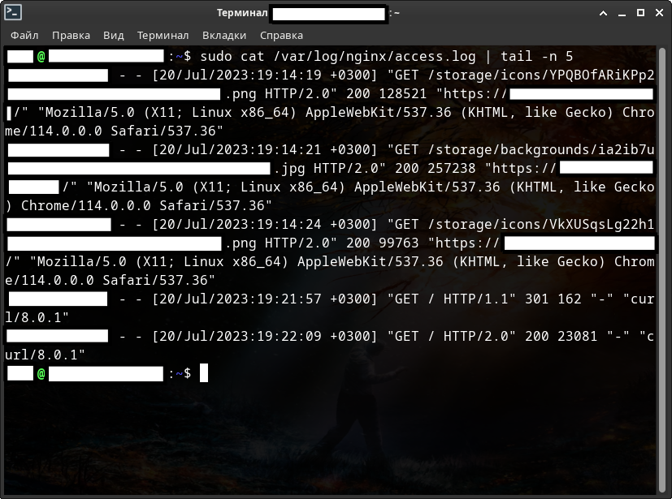
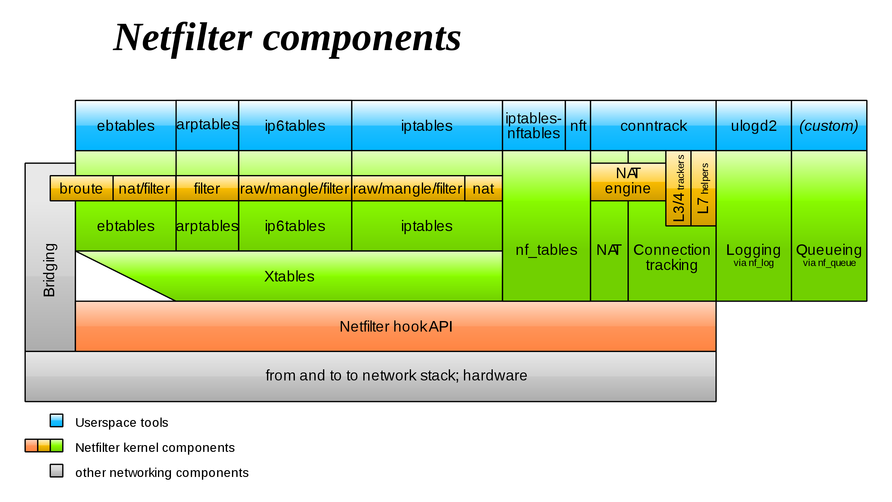
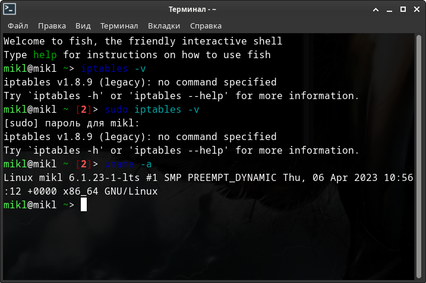
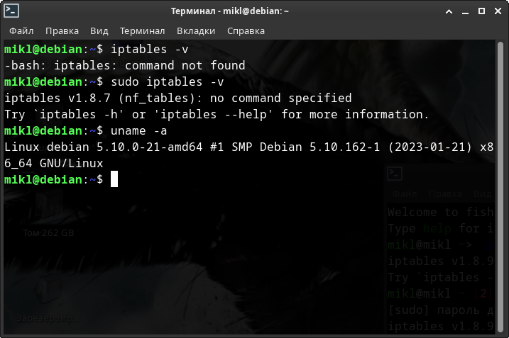
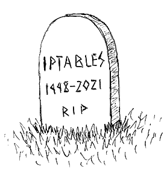
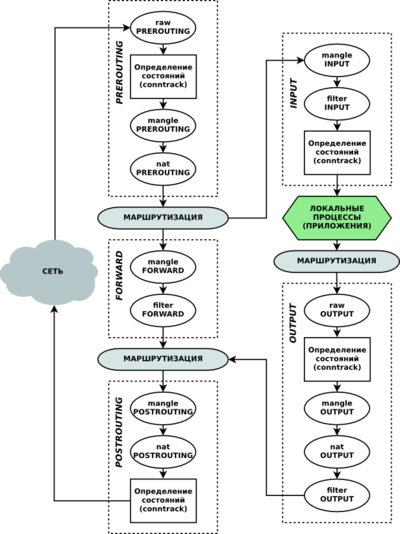
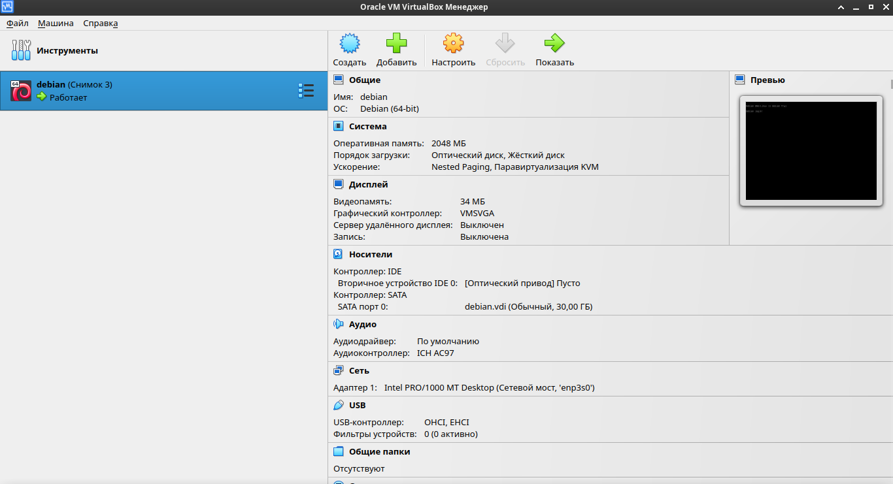
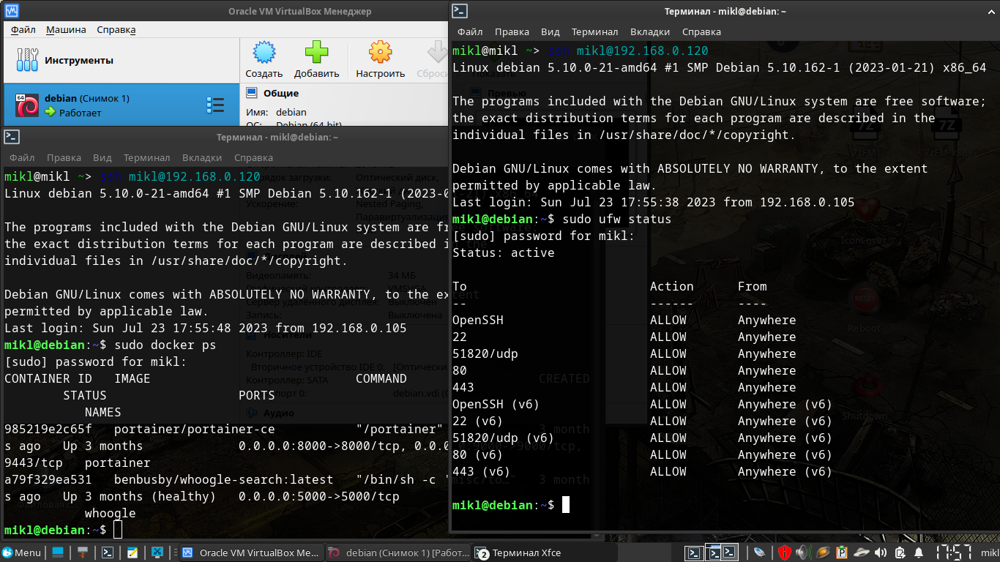
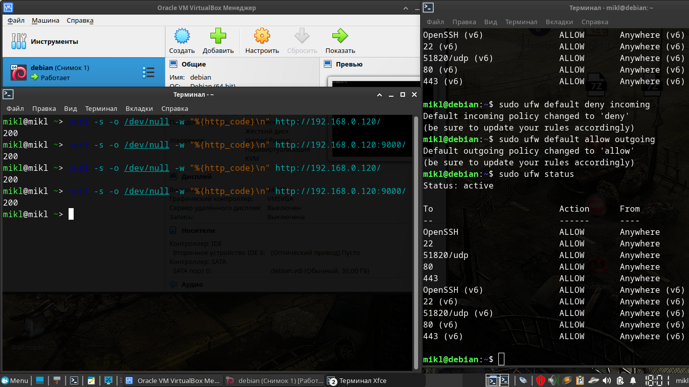

Blacklists.
Большое руководство по чёрным спискам ip адресов.
Для начала давайте с вами определимся с основными понятиями:
- Что такое угроза?
- Что такое признак атаки?
- Как узнать о том, что сервер находится в большой опасности?
- Что вообще такое фаервол, и какие они бывают в Linux-ах.
- И многое другое ...
После чего посмотрим каким образом блокировать и разблокировать угрозы безопасности.
Далее определимся с пониятием черных и белых списков и зачем они вообще нужны.
Посмотрим с вами на реальные примеры и виртуального и реального (VPS) серверов.
И наконец, на примере виртуального сервера в разы усилим его безопасность.
Итак, приступим.
Оглавление
1. Что можно сделать с украденными личными данными?
Однажды человека может разбудить неожиданный звонок с требованием вернуть долг, а в почтовом ящике окажется повестка в суд. Но кредитов он не брал, закон не нарушал.
Чтобы взять кредит в крупном банке, одних паспортных данных недостаточно: потребуется хотя бы копия документа. А вот оформить микрозаем в интернете можно с помощью сведений с первых страниц паспорта — номера, даты выдачи, кода подразделения и места рождения.
Обратившись в несколько микрофинансовых организаций, мошенники получат существенную сумму на свои карты — а затем исчезнут, оставив жертву с долгами.
Пользуясь данными чужого паспорта, мошенники регистрируют фирму-однодневку. Так они безнаказанно творят темные дела: уклоняются от налогов или собирают с обычных людей деньги за предзаказ дорогих товаров.
Когда обман вскроется, мошенники заберут деньги и останутся вне подозрений — а вот владельцу паспорта придется объясняться с полицией.
Некоторые интернет-магазины предлагают клиентам покупать товары в рассрочку: чтобы забрать вещь, нужно указать паспортные данные, а оплатить покупку можно позже.
Это на руку мошенникам: они заказывают товар по чужому документу, а курьеру говорят, что покупку получит другой человек — не владелец паспорта. Предупрежденный курьер спокойно отдает дорогую вещь аферисту, но расплачиваться за нее должен ничего не подозревающий владелец паспорта.
Если у «заемщика» хорошая кредитная история, рассрочку, скорее всего, одобрят. Правда, техника попадет в руки мошенникам, а расплачиваться придется вам.
Зная ФИО жертвы и адрес регистрации, мошенники подделывают квитанции на оплату штрафов от государственных органов.
По номеру паспорта на сайте налоговой службы легко узнать ИНН: этот номер поможет придать письму из налоговой убедительности и сообщить жертве об огромной задолженности.
Чтобы оплатить «штраф» и избежать суда, аферисты просят как можно скорее воспользоваться вложенной квитанцией.
Мошенники, которые обманывают людей в интернете, часто просят жертв выслать им деньги на электронный кошелек — поэтому аферистам выгодно использовать чужие данные. Так вся ответственность за мошенничество ляжет на плечи подставного владельца кошелька, а настоящие преступники останутся незамеченными.
Чтобы изготовить паспорт, которым преступник сможет полноценно пользоваться, недостаточно подделать водяные знаки — паспорт с фальшивыми данными не пройдет ни одну проверку в электронных базах.
Поэтому мошенники используют информацию из настоящего документа, а фотографию в фальшивый паспорт вклеивают свою. По паспорту с реальными данными, но фотографией афериста можно брать кредиты в мелких организациях, не вызывая подозрений, — а отвечать по долгам придется владельцу настоящего паспорта.
Выяснить номер телефона по паспортным данным несложно. Многие указывают его на страницах в соцсетях или на страницах-визитках, которые можно найти, просто набрав имя и фамилию жертвы в поисковике.
Мошенник размещает объявление о продаже дорогой вещи по бросовой цене: утверждает, что надо продать срочно, поэтому и скидка большая. А так как цена привлекательная, то и желающих много, поэтому аферист настаивает на предоплате: чтобы не терять время, если покупатель вдруг передумает. В качестве гарантии липовый продавец высылает скан паспорта — разумеется, чужого, а после получения денег перестает отвечать на сообщения.
Это только цветочки, а бывают и ягодки!
Это только для того, чтобы вы относились к безопасности вашего сервера серьёзно! Даже если у вас простенький сайт без каких-либо конфидециальных данных.
2. Введение.
Немного напугал, перейдём к теме серверов и их безопасности.
Защита информации становится необходимостью для предотвращения потенциальных угроз и минимизации рисков.
Защита информации обеспечивает личную безопасность и приватность, предотвращает утечку личных данных и защищает от возможных мошеннических действий.
Под термином «угроза» следует понимать любое программное средство, косвенно или напрямую способное нанести ущерб компьютеру, сети, информации или правам пользователя (то есть вредоносные и прочие нежелательные программы). В более широком смысле термин «угроза» может означать любую потенциальную опасность для компьютера или сети (то есть ее уязвимость, которая может быть использована для проведения хакерских атак).
Сетевая атака – это вторжение в операционную систему удаленного компьютера. Злоумышленники предпринимают сетевые атаки, чтобы захватить управление над операционной системой, привести ее к отказу в обслуживании или получить доступ к защищенной информации.
Следует понимать, что защита от взлома серверов — это комплекс мер, в том числе подразумевающий постоянный мониторинг работы сервера и работу по совершенствованию защиты. Невозможно защитить сервер от внешнего доступа раз и навсегда, ведь каждый день обнаруживаются новые уязвимости и появляются новые способы взлома сервера.
Основной признак попыток — «подозрительная активность» в логах. Это могут быть регулярные попытки подключения с разных IP-адресов, запросы к различным портам сервера, запросы на те или иные ресурсы.
Лог (log) — это текстовый файл, куда автоматически записывается важная информация о работе системы или программы. Чаще всего говорят о логах сервера. Их записывает программное обеспечение, которое управляет внутренней частью сайта или онлайн-системы. Лог-файл — своеобразный журнал событий.
В логи записываются сведения об ошибках, действиях пользователей и других событиях, которые происходят на сервере или в системе.
Чтобы обнаружить угрозу, необходимо регулярно анализировать все логи, начиная с системных, и заканчивая логами различных утилит, которые работают на вашем сервере.
Однако, анализировать логи вручную - не самая лучшая затея, хотя и вполне возможная. Для анализа логов существуют специальнные утилиты автоматического анализа и блокирования несанкционированного доступа. В простейшем случае они анализируют логи на подозрительную активность и при необходимости блокируют все попытки несанкционированного получения доступа на те или иные ресурсы сервера.
Что значит несанкционированного?
Несанкционированно - осуществляемый без санкции, официального разрешения. Т.е. в нашем случае при самом простом способе прямого входа на ваш веб-сайт через веб-браузер вы увидите в логах действительные статусы состояний сервера. При любой попытке обойти формы ввода логина и пароля, даже напрямую вручную через браузер, в логи будет выведен совершенно другой статус состояния вашего сайта или всего сервера. При этом там же будут отображены все попытки запросов и все адреса и порты, на которые происходили запросы. В случае же использования любых утилит - не браузеров - эта информация сразу же отобразится в логах.
Обычно любая утилита или программа (не важно Windows или Linux) во время запроса обязательно вставляет в посылаемый на сервер запрос (пакет) минимальную информацию о себе. В случае же хакерских утилит такой информации не будет.
Посмотрим на частичный лог одного веб-сайта. IP-ардеса и некоторые другие данные лога я закрасил в целях безопасности.

Мы здесь можем видеть - что некий IP-адрес (пользователь, закрашен в самой левой части перед датой и временем) делает GET-запрос. При этом у адреса есть операционная система, и делает он свой запрос через браузер Google-chrome. Ну и соответственно видим дату и время запроса, а также статус состояния сайта, т.е. ответ веб-сайта.
Судя по этой скудной информации мы можем сделать вывод о том, что некий пользователь напрямую через веб-браузер, т.е. санкционированно, обращался к некому веб-сайту.
В последних 2 строках GET-запросы происходили не через браузер и с помощью утилиты Curl. При этом видим также и версию этой утилиты.
В этих последних строках из-за статуса состояния сайта мы можем сделать вывод о том, что запрос хоть и был санкционированный, но не прямой, т.е. не через веб-браузер, и к этому стоит присмотреться.
Существуют утилиты не только для автоматического мониторинга работы сервера и его доступности в интернете, но и оповещения по электронной почте или СМС в случае обнаружения проблем.
Причём располагать утилиты мониторинга доступности сервера в интернете и оповещений непосредственно на самом сервере - не самая лучшая затея, хотя и вполне реализуемая и частенько практикуемая. Практикуемая именно потому что денег на второй сервер только для мониторинга нет. Такие утилиты вполне можно установить на сервер в виртуальной машине, которая будет не доступна из интернета, тем самым защищена. Она же и будет производить мониторинг работы и оповещать в случае проблем. Однако, не все могут оставить работать свой ПК с работающей виртуальной машиной на круглосуточную работу ради одного сервера. Обычно так делают когда серверов много.
Кстати говоря, любые подобные утилиты мониторинга и оповещений вполне можно создать самостоятельно.
Сегодня мы с вами рассмотрим одну из утилит для блокировки вторжений на сервер. Рассматривать утилиты оповещений и мониторинга сегодня мы не будем.
Однако, это не говорит о том, что при использовании утилит блокировок вам не нужно будет использовать утилиты мониторинга или антивирусные средства. Как раз наоборот.
Просто базовое понимание утилит блокировки даст вам понимание того, как запускать все программы и под-программы мониторинга, блокировок и оповещений одновременно так, чтобы данные получаемые из логов были на тот момент актуальными и одинаковыми для всех утилит. Иначе вы можете столкнуться с тем, что для одной из программ в логах у вас будут одни данные, для другой уже другие. В результате одна из утилит просто не сработает во время. Или вообще пропустит важные данные для обработки результата.
Чем это чревато? Надеюсь, вы и сами понимаете!
Также, этот же момент не говорит о том, что вам всё равно не придётся создавать регулярные резервные копии данных сайта или всего сервера. Потому что взломать можно всё что угодно! Было бы желание. Вот как раз на случай проникновения и/или захвата управления, чтобы иметь возможность быстро восстановить сервер после атаки, как раз и нужны резеревные копии данных.
Помимо описанного, необходимо регулярно следить за обновлениями программного обеспечения и операционной системы сервера. Обновления обычно устраняют уязвимости, которые могут использоваться для проведения атак.
3. Файловый дескриптор.
Файловый дескриптор — это неотрицательное число, которое является идентификатором потока ввода-вывода. Дескриптор может быть связан с файлом, каталогом, сокетом.
Например, когда вы открываете или создаете новый файл, операционная система формирует для себя запись для представления этого файла и хранения информации о нем. У каждого файла индивидуальный файловый дескриптор Linux.
В Linux библиотека libc открывает для каждого запущенного приложения(процесса) 3 файл дескриптора, с номерами 0,1,2.
- Файл дескриптор 0 называется STDIN и ассоциируется с вводом данных у приложения.
- Файл дескриптор 1 называется STDOUT и используется приложениями для вывода данных, например командами print.
- Файл дескриптор 2 называется STDERR и используется приложениями для вывода данных, сообщающих об ошибке.
Если в вашей программе вы откроете какой-либо файл на чтение или запись, то скорее всего вы получите первый свободный ID и это будет номер 3.
Файл дескриптор с номером 255 можете смело игнорировать, он был открыт для своих нужд уже самим bash, а не прилинкованной библиотекой.
Например, откроем консоль с bash и посмотрим PID нашего процесса.
[user@localhost Загрузки]$ echo $$ 11644 [user@localhost Загрузки]$ ls -lha /proc/11644/fd/ итого 0 dr-x------ 2 user users 0 июл 22 08:26 . dr-xr-xr-x 9 user users 0 июл 22 08:26 .. lrwx------ 1 user users 64 июл 22 08:26 0 -> /dev/pts/1 lrwx------ 1 user users 64 июл 22 08:26 1 -> /dev/pts/1 lrwx------ 1 user users 64 июл 22 08:26 2 -> /dev/pts/1 lrwx------ 1 user users 64 июл 22 08:26 255 -> /dev/pts/1 [user@localhost Загрузки]$
Сейчас все 3 файл дескриптора связаны с устройством псевдотерминала /dev/pts, но мы все равно можем ими манипулировать, например запустим во второй консоли.
[user@localhost ]$ echo "hello world" > /proc/11644/fd/0
И в первой консоли мы увидим.
[user@localhost ]$ hello world
Вы можете легко переопределить эти 3 файл дескриптора в любом процессе, в том числе и в bash, например через трубу(pipe), соединяющую два процесса.
Продолжение смотрите в статье: «Файл дескриптор в Linux с примерами».
Нас же интересует немного другой вопрос.
Приведу небольшой пример.
У нас есть некий лог-файл, в который постоянно ведётся запись разных данных. Каких данных сейчас не важно. Например, в лог-файл NGINX-а запись будет производиться только при поступления запроса на сервер и только на тот веб-адрес, который имеется в настройках конфигурации.
Допустим, у нас есть несколько программ в виде коротких скриптов, которые постоянно с разными временными задержками анализируют этот лог-файл.
Возникает логичный вопрос: А одинаковые ли будут данные у каждого из этих скриптов для анализа?
Проведём небольшой эксперимент. Для этого создадим 3 разных скрипта. Один будет записывать данные в некий предопределённый нами лог-файл, а 2 других читать этот лог и выводить результат чтения на экран.
Файл «./write.sh». Здесь мы будет 10 раз записывать время с секундами и наносекундами в лог-файл «./text.log», но с задержкой между записями в 2 секунды. Т.е. итоговое время выполнения, по идее, должно быть 18 секунд, включая вывод на экран.
$ nano ./write.sh
#!/bin/bash
echo "" > text.log
for x in {1..10}; do
_date=$(date '+%H:%M:%S:%N')
_random=$(echo "${_date}" | rev | cut -d ':' -f1 | rev)
echo "${_date} - ${_random}"
echo "${_date} - ${_random}" > text.log
sleep 2
done
exit 0
CTRL + o
CTRL + x
Файл «./read.sh». Здесь мы будет читать наш лог-файл «./text.log», но вместо простого вывода содержимого на экран будем подсчитать количество строк в этом файле. Читать будем 3 раза с задержкой открытого файла дескриптора на 1 секунду в каждый цикл чтения. Итоговое время выполнения, по идее, должно быть 3 секунды.
$ nano ./read.sh
#!/bin/bash
for x in {1..3}; do
date '+%H:%M:%S:%N'
count=0
while read line; do
let count+=1
sleep 1
done <text.log
echo "${count}"
date '+%H:%M:%S:%N'
echo ""
done
exit 0
CTRL + o
CTRL + x
Файл «./read2.sh». Ну а в этом скрипте мы будет читать наш лог-файл «./text.log», также как и в предыдущем примере, но с задержкой файла-дескриптора уже на 2 секунды при каждом цикле чтения. Итоговое время выполнения, по идее, должно быть 6 секунд.
$ nano ./read2.sh
#!/bin/bash
for x in {1..3}; do
date '+%H:%M:%S:%N'
count=0
while read line; do
let count+=1
sleep 2
done <text.log
echo "${count}"
date '+%H:%M:%S:%N'
echo ""
done
exit 0
CTRL + o
CTRL + x
Теперь, откроем 3 разных косноли и попытаемся быстро-быстро запустить эти скрипты одновременно. Разумеется они будут работать не одновременно. Однако, из-за временных sleep задержек это будет не важно.
Смотрим на результат.

Как видите, и в первой и во второй консоли, из-за того, что скрипты долго держат файловый дескриптор открытым, они продолжают читать старый файл. Таким образом скрипты продолжает использовать старые данные и не успевают получить новые для обработки, в то время как в лог-файл уже была произведена запись и он был обновлён.
Более того, 2-й скрипт «./read2.sh» вообще потерял много данных, а задержка была неоправдано долго и в данном случае именно из-за того, что файловый дескриптор уже был открыт другим процессом, т.е. занятым в этот момент.
В итоге, из-за такой, казалось бы, простой операции прочитать файл - образовалась маленькая локальная война за ресурсы, в результате которой было потеряно много данных.
Проблема чтения данных ещё состоит и в том, что практически все утилиты или скрипты анализа лог-файлов могут быть очень разными и сложными, или наоборот простыми. Какие-то из них потребляют мало оперативной памяти, а какие-то напротив - очень много.
Уменьшать время работы одной из утилит ради ускорения обработки данных очень и очень плохая затея! Ведь таким образом вы можете чрезмерно нагрузить и процессор и оперативную память. А если у вас VPS или VDS сервер с ограниченным количеством ресурсов - в результате вы можете просто напросто зависнуть. Да-да, в Linux-е и зависнуть. Это не шутка!
Этот маленький эксперимент должен был сказать вам не о том, что необходимо уменьшать время запуска тех или иных программ или скриптов анализа, а о том, что анализировать данные лучше какой-то одной единственной утилитой, и уже в ней, внутри, запускать все остальные необходимые вам внешние скрипты и программы обработки результатов, при обнаружении проблем. При условии, что такая функция запуска внешних скриптов или программ имеется внутри утилиты анализа.
Обычно, у всех программ и утилит анализа имеются специальные макросы для запуска внешних программ или скриптов для обработки результатов или запуска какого-нибудь действия / противодействия в самой ОС.
Если же возможности самого анализа как такового ограничены - тогда да, запуск отдельной программы или отдельного скрипта в системе по таймеру - будет хорошим выходом из ситуации.
Но, тогда вы, скорее всего, будете вынуждены подбирать и калибровать время запуска по таймеру только ради 2 вышеуказанных условий - аткуальность данных и нагрузка на оперативную память.
Актуальность данных подразумевает несколько важных пунктов.
- Как часто обновляется нужный вам лог-файл, т.е. как часто в него записываются новые данные?
- Как часто необходимо анализировать лог-файл?
В зависимости от данных ответов настраивается время таймера.
Нагрузка же на процессор имеет немного более высокий приоритет. Для корректной настройки вам также необходимо будет ответить на пару вопросов.
- Сколько максимально в пике оперативной памяти потребляет ваша утилита или скрипт?
- Как сильно ваша утилита или скрипт нагружают процессор?
Последние 2 вопроса имеют место быть, в случае, когда утилита имеет внутри себя множество различных сложных вычислений. В таком случае стоит задуматься насчет частоты запуска и соответственно об увеличении времени таймера для её запуска.
При этом как именно будет запускаться утилита или скрипт не особо играет роли - будь то системный systemd-таймер или процесс запущенный из под сервиса cron, т.е. crontab.
4. Межсетевые экраны.
Содержание главы.
- История, определения.
- Netfilter
- Таблицы и цепочки IPTables.
- NFTABLES.
- UFW / Firewalld.
- Примеры использования UFW / Firewalld.
4.1. История, определения.
Рассмотрим первую линию обороны - межсетевые экраны.
Брандмауэр, фаервол или межсетевой экран – это система, которая выполняет роль защитной стены между глобальным интернетом и устройством пользователя.
Брандмауэр фильтрует всю входящую информацию и не пропускает вредоносный контент и вирусы.
Брандмауэры, как правило, контролируют двунаправленный поток трафика, поэтому представьте себе брандмауэр перед организацией, отделяющий ее от общедоступного Интернета. Он должен иметь возможность блокировать входящий трафик, чтобы попытаться удержать злоумышленников, но он также должен иметь возможность разрешать исходящий трафик, потому что людям нужно просматривать веб-страницы, отправлять электронные письма и иметь связь, которая выходит за пределы сети.
Наиболее распространённое место для установки межсетевых экранов — граница периметра локальной сети для защиты внутренних хостов от атак извне. Однако атаки могут начинаться и с внутренних узлов — в этом случае, если атакуемый хост расположен в той же сети, трафик не пересечёт границу сетевого периметра, и межсетевой экран не будет задействован. Поэтому в настоящее время межсетевые экраны размещают не только на границе, но и между различными сегментами сети, что обеспечивает дополнительный уровень безопасности.
Программные межсетевые экраны появились существенно позже и были гораздо моложе, чем антивирусные программы. Например, проект «Netfilter/iptables» (один из первых программных межсетевых экранов, встраиваемых в ядро Linux с версии 2.4) был основан в 1998 году.
Фильтрация трафика осуществляется на основе набора предварительно сконфигурированных правил, которые называются ruleset. Удобно представлять межсетевой экран как последовательность фильтров, обрабатывающих информационный поток. Каждый из фильтров предназначен для интерпретации отдельного правила. Последовательность правил в наборе существенно влияет на производительность межсетевого экрана. Например, многие межсетевые экраны последовательно сравнивают трафик с правилами до тех пор, пока не будет найдено соответствие.
Существует два принципа обработки поступающего трафика. Первый принцип гласит: «Что явно не запрещено, то разрешено». В данном случае, если межсетевой экран получил пакет, не попадающий ни под одно правило, то он передаётся далее. Противоположный принцип — «Что явно не разрешено, то запрещено» — гарантирует гораздо большую защищённость, так как он запрещает весь трафик, который явно не разрешён правилами. Однако этот принцип оборачивается дополнительной нагрузкой на администратора.
В конечном счёте межсетевые экраны выполняют над поступающим трафиком одну из двух операций: пропустить пакет далее (allow) или отбросить пакет (deny). Некоторые межсетевые экраны имеют ещё одну операцию — reject, при которой пакет отбрасывается, но отправителю сообщается о недоступности сервиса, доступ к которому он пытался получить. В противовес этому, при операции deny отправитель не информируется о недоступности сервиса, что является более безопасным.
Перейти к оглавлению. Перейти к главе.
4.2. Netfilter.
Посмотрим на компаненты, которые входят в состав Netfilter.

Все компаненты обозначенные голубым цветом - это пользовательские утилиты, т.е. програмная часть, с помощью которых осуществляется доступ к нижележащим таблицам фильтрации и преобразования пакетов. У «{ip,ip6,arp,eb}tables» в итоге к «Xtables», соответственно у «iptables-nftables» и «nft» к «nf_tables».
Долгое время «Xtables», встроенная в ядро, считалась единственным способом управления Netfilter-ом.
iptables — утилита командной строки для настройки встроенного в ядро Linux межсетевого экрана, разработанного в рамках проекта Netfilter.
Термином iptables также часто называют сам межсетевой экран в ядре. Настройка экрана выполняется либо напрямую с помощью iptables, либо через один из фронтендов, консольных или графических. iptables работает с протоколом IPv4, для IPv6 разработана утилита ip6tables. В основном их синтаксис совпадает, но некоторые специфичные для протоколов опции различаются.
Тем временем постепенно развивался проект «nf_tables». Проект должен и выступил в качестве замены существующего фреймворка «{ip,ip6,arp,eb}tables» в 2021 году.
Этот проект предоставляет новую систему фильтрации пакетов, пользовательскую утилиту ntf, а также слой совместимости с {ip,ip6}tables. nftables использует существующие хуки, отслеживание соединений, очереди в пространстве пользователя и подсистему логирования netfilter.
Фреймворк iptables постепенно выходит из употребления; более современная замена — nftables, в котором предусмотрен слой совместимости.

В Debian 11 фреймворк nftables встроен в систему по умолчанию со слоем совместимости для iptables.

IPTABLES умер в 2021 году. Он конечно всё ещё встроен во многие системы, но постепенно будет полностью заменён на более эффективный NFTABLES.

Плохая новость: документация «NFTABLES» («nft»: man nft) содержит больше 3 тысяч строк.
Для облегчения перехода можно конвертировать правила iptables в nftables с помощью утилит iptables-translate, iptables-restore-translate, iptables-nft-restore и т.п. Утилиты находятся в пакете iptables, который необходимо установливать отдельно.
Грубо говоря, Netfilter по сути является как бы внутренней обороной ОС. Однако, самой ОС нужна ещё и внешняя оборона - инструмент или средство для управления брандмауэром, такие как UFW или Firewalld.
UFW (Uncomplicated Firewall) - является самым простым и довольно популярным инструментарием командной строки для настройки и управления брандмауэром.
Firewalld — программное обеспечение для управления брандмауэрами, поддерживаемое многими дистрибутивами Linux.
Чтобы понять как работает фильтрация пакетов в межсетевых экранах, для этого надо заглянуть в раздел «Таблицы и цепочки IPTABLES».
Перейти к оглавлению. Перейти к главе.
4.3. Таблицы и цепочки IPTables.
Чтобы разобрать работу Netfilter/iptables возьмём схему работы из википедии.

Ну, а для базового понимания схемы разберём с вами основные понятия: таблицы, цепочки, действия над пакетами и механизм определения состояния.
Каждый из пунктов важен для понимания работы любого межсетевого экрана.
Цепочки.
- PREROUTING - для изначальной обработки входящих пакетов.
- INPUT - для входящих пакетов, адресованных непосредственно локальному компьютеру.
- FORWARD - для проходящих (маршрутизируемых) пакетов.
- OUTPUT - для пакетов, создаваемых локальным компьютером, т.е. исходящих.
- POSTROUTING - для окончательной обработки исходящих пакетов.
Цепочки можно создавать самостоятельно, и также их уничтожать.
Почти в каждой цепочке имеется 4 таблицы:
- raw - пакет проходит данную таблицу до передачи системе определения состояний. Используется редко, например для маркировки пакетов, которые НЕ должны обрабатываться системой определения состояний. Для этого в правиле указывается действие NOTRACK. Содержитcя в цепочках PREROUTING и OUTPUT.
- mangle - содержит правила модификации IP‐пакетов. Среди прочего, поддерживает действия TTL, TOS, и MARK (для изменения полей TTL и TOS, и для изменения маркеров пакета). Редко необходима и может быть опасна.
- nat - предназначена для подмены адреса отправителя или получателя. Данную таблицу проходят только первый пакет из потока, трансляция адресов или маскировка (подмена адреса отправителя или получателя) применяются ко всем последующим пакетам в потоке автоматически. Поддерживает действия DNAT, SNAT, MASQUERADE, REDIRECT. Содержится в цепочках PREROUTING, OUTPUT, и POSTROUTING.
- filter - основная таблица, используется по умолчанию если название таблицы не указано. Используется для фильтрации пакетов. Содержится в цепочках INPUT, FORWARD, и OUTPUT.
Действия над пакетами.
- ACCEPT - принять пакет.
- DROP - отбросить пакет, при этом пакет не передается в другие таблицы/цепочки.
- REJECT - отбросить пакет, отправив отправителю ICMP-сообщение, при этом пакет не передается в другие таблицы/цепочки.
- RETURN - возвратить пакет в предыдущую цепочку и продолжить ее прохождение начиная со следующего правила.
- SNAT - применить трансляцию адреса источника в пакете. Может использоваться только в цепочках POSTROUTING и OUTPUT в таблицах nat.
- DNAT - применить трансляцию адреса назначения в пакете. Может использоваться в цепочке PREROUTING в таблице nat.
- LOG - протоколировать пакет и обработать остальными правилами.
- MASQUERADE - используется вместо SNAT при наличии соединения с динамическим IP (допускается указывать только в цепочке POSTROUTING таблицы nat).
- MARK - используется для установки меток на пакеты, передается для обработки дальнейшим правилам.
Есть и другие действия. Остановимся на базовых.
Механизм определения состояний (conntrack).
В общем, механизм определения состояний (он же state machine, он же connection tracking, он же conntrack) является частью пакетного фильтра и позволяет определить определить к какому соединению/сеансу принадлежит пакет.
Conntrack анализирует состояние всех пакетов, кроме тех, которые помечены как NOTRACK в таблице raw. На основе этого состояния определяется принадлежит пакет новому соединению (состояние NEW), уже установленному соединению (состояние ESTABLISHED), дополнительному к уже существующему (RELATED), либо к "другому" (неопределяемому) соединению (состояние INVALID). Состояние пакета определяется на основе анализа заголовков передаваемого TCP-пакета. Модуль conntrack позволяет реализовать межсетевой экран сеансового уровня (пятого уровня модели OSI). Для управления данным механизмом используется утилита conntrack, а так же параметр утилиты iptables: -m conntrack или -m state. Состояния текущих соединений conntrack хранит в ядре. Их можно просмотреть в файле /proc/net/nf_conntrack (или /proc/net/ip_conntrack).
Итак, разберём схему работы.
Пакет (из интернета в сеть, затем) из сети обязательно проходит цепочку PREROUTING, далее попадает в таблицу маршрутизации и в зависимости от принадлежности определяет куда пойдёт дальше. Если пакет не адресован локальной системе, он попадёт в цепочку FORWARD. Если адресован - в цепочку INPUT. После INPUT пакет обрабатывают системные процессы и демоны. После локальной обработки программы могут сформировать ответ и этот ответ в соответствии с правилами маршрутизации направляется в цепочку OUTPUT. Затем снова маршрутизируется и наконец попадает в цепочку POSTROUTING, как и пакет из цепочки FORWARD. И только после всех этих манипуляций с пакетом он наконец вновь отправляется обратно в сеть и уже дальше в интернет, если стоит такая задача.
Почему пакет несколько раз проходит через таблицу маршрутизации?
Каждая цепочка, которую проходит пакет состоит из набора таблиц (table). Таблицы в разных цепочках имеют одинаковое наименование, но тем не менее никак между собой не связаны. Например таблица nat в цепочке PREROUTING никак не связана с таблицей nat в цепочке POSTROUTING. Каждая таблица состоит из упорядоченного набора (списка) правил. Каждое правило содержит условие, которому должен соответствовать проходящий пакет и действия к пакету, подходящему данному условию.
Проходя через серию цепочек пакет последовательно проходит каждую таблицу и в каждой таблице последовательно сверяется с каждым правилом, и если пакет соответствует какому-либо критерию, то выполняется заданное действие над пакетом. При этом, в каждой таблице (кроме пользовательских) существует заданная по-умолчанию политика. Данная политика определяет действие над пакетом, в случае, если пакет не соответствует ни одному из правил в таблице. Чаще всего - это действие ACCEPT, чтобы принять пакет и передать в следующую таблицу или DROP - чтобы отбросить пакет. В случае, если пакет не был отброшен, он завершает свое путешествие по ядру системы и отправляется в сетевой интерфейс, которая подходит по правилам маршрутизации.
Таблица nat и mangle может модифицировать получателя или отправителя сетевого пакета. Именно поэтому сетевой пакет несколько раз сверяется с таблицей маршрутизации.
Блокировку и разблокировку ip-адресов, разрешающие и запрещающие правила, а также сохранение состояния при перезагрузке ОС вы можете посмотреть в статье: «Безопасность сетевых соединений: 6. Блокировка ip адреса или всей подсети».
Перейти к оглавлению. Перейти к главе.
4.4. NFTABLES.
В отличие от iptables, в nftables отсутствуют встроенные таблицы. Количество таблиц и их имена определяется пользователем. Тем не менее, каждая таблица имеет только одно семейство адресации и применяется к пакетам только этого семейства.
В отличие от iptables, в nftables отсутствуют встроенные цепочки. Соответственно, если опрелённые типы или хуки фреймворка netfilter не задействованы ни в одной цепочке, то проходящие через эти цепочки пакеты обрабатываться не будут (в отличие от iptables).
Есть два типа цепочек. Базовая цепочка является точкой входа для пакетов из сетевого стека; в ней указывается хук. Обычная цепочка может использоваться в качестве цели перехода и используется для лучшей организации правил.
Все спрашивают почему я так люблю Acrhlinux - как минимум за его прекрасную векипедию. Поэтому более подробную информацию о работе с NFTABLES вы можете найти на его страницах в статье: «ArchWiki: nftables (Русский)», а если вам будет мало этой информации и у вас по прежнему останутся пару вопросов - добро пожаловать в статью на losst.pro: «losst.pro: Как пользоваться nftables».
В этих статья подробно с разъяснено как работать с NFTABLES. Словом, мне дополнить нечем. Читайте внимательно, тогда ничего не пропустите и вам всё будет понятно.
Разьве что раздел установки для разных дистрибутивов Linux будет у всех разный. Во всём остальном - и настройки и работа с фреймворком будет абсолютно одинаковой.
Но самое главное в том, что знание схемы движения пакетов в системе IP(6)TABLES даёт вам базовое понимание того, какие таблицы и цепочки с предопределёнными типами и хуками для работы вашего сервера нужно будет создавать, а также какие правила и приоритеты устанавливать для этих цепочек. Понимание работы IP(6)TABLES значительно ускоряет процес настройки.
Также уделите внимание Firewalld, ибо с ним, вам в разы меньше придётся создавать различных таблиц, цепочек и правил поведения вашего сервера, включая nat-преобразование адресов, в разы будет усилена защита, но также может и в разы усложниться жизнь при работе с различными сервисами в т.ч. базами данных.
Перейти к оглавлению. Перейти к главе.
4.5. UFW / Firewalld.
Cерверы постоянно подвергаются различным атакам или сканируются в поиске уязвимостей. Как только эти уязвимости находятся, мы рискуем стать частью ботнета, раскрыть конфиденциальные данные или потерять деньги из-за сбоев в работе веб-приложений. Одной из первых мер по снижению рисков безопасности является грамотная настройка правил межсетевого экрана.
UFW (Uncomplicated Firewall) — удобный интерфейс для управления политиками безопасности межсетевого экрана. Он представляет собой интерфейс iptables, предназначенный для упрощения процесса настройки брандмауэра. Хотя iptables — надежный и гибкий инструмент, начинающим бывает сложно научиться использовать его для правильной настройки брандмауэра.
Подробно об установке и настройке UFW фаервола вы можете посмотреть в статье: «Безопасность сетевых соединений: 4. Фаерволы: 4.1. Фаервол UFW».
По сути UFW и Firewalld это фасад сервера, а {IP,IP6,ARP,EB}Tables / NFTables - это интерьер.
Firewalld - более продвинутая утилита управления Linux брандмауэром Netfilter. Несмотря на собственный синтаксис, имеет такой же принцип работы, как и Iptables.
В отличие от IPTABLES имеет более продвинутую безопасность, настройки, стабильную работу, а также сохранение правил фильтрации и маршрутизации без лишних скриптов и сервисов, и многое другое.
Подробно об установке и настройке Firewalld фаервола вы можете посмотреть в статье: «Безопасность сетевых соединений: 4. Фаерволы: 4.2. Фаервол Firewalld».
Удивительно, но Docker не работает из коробки с “Universal Firewall” Linux, или UFW.
Проблема в том, что UFW и Docker пытаются изменить одни и те же базовые правила брандмауэра, и этот конфликт требует дополнительной настройки, если вы хотите запустить UFW и Docker вместе.
Если вы настроите базовый брандмауэр UFW на запрет по умолчанию и разрешение HTTP и SSH, это будет выглядеть безопасным, но не будет блокировать запуск контейнеров Docker, привязанных к другим портам.
Эту проблему может быть трудно обнаружить, поскольку UFW и Docker – это отдельные системы.
Тем не менее, UFW покажет правило брандмауэра как правильно внесенное в белый список, и оно, конечно, будет видно вам с вашего места, внесенного в белый список.
Но если оно запущено через Docker, то по умолчанию оно будет видно на порту 8000 из любого места.
Это может стать серьезной проблемой, если вы не решите ее.
Для совмещения Docker-а и фаервола UFW воспользуйтесь статьёй: «Как использовать Docker с UFW параллельно».
Однако, не спешите переходить по ссылке. В данной статье используются решения, основанные на IPTABLES, фреймворке, который постепенно выходит из употребления. В итоге его заменит другое фреймворк - NFTABLES.
Не факт, что у вас получится, но если получится - вы счастливчик. Но, не спешите радоваться. Ибо ваша настройка продержится максимум лет 5...10, пока последний фреймворк полностью не заместит всеми любимый IPTABLES.
В свою очередь Firewalld требует тщательной настройки и понимания как всё устроено! А самое главное - он легко совмещается с Docker-ами.
Перейти к оглавлению. Перейти к главе.
4.6. Примеры использования UFW / Firewalld.
Вот тут начинается самое интересное!
Рассмотрим с вами несколько примеров на основе моего Archlinux на ноутбуке и виртуальной машине на Debian 11 со следующими характеристиками:

Самое главное здесь то, что сеть установлена в режиме сетевого моста. Таким образом, если в ОС нет никаких фаерволов, кроме межсетевого экрана, то все внутренние сервисы должны быть доступны в локальной сети по IP-адресу, буквально напрямую.
Последовательно произведём все, почте без исключения, настройки по порядку, согласно статье: «Базовые настройки серверов Linux», но установим и настроим, пока что, фаервол UFW.
В Docker установим 2 сервиса: Whoogle и Portainer - как наиболее простые для проведений тестов. К первому проще всего прикрутить NGINX и Fail2ban, а с помощью второго будет легче следить за всеми контейнерами.
Запуск Portainer-а:
$ cd ~
$ mkdir -p portainer-data && cd portainer-data
$ nano docker-compose.yml
version: "3"
volumes:
portainer_data:
services:
portainer:
image: portainer/portainer-ce
container_name: portainer
volumes:
- /var/run/docker.sock:/var/run/docker.sock
- portainer_data:/data
ports:
- 9000:9000
- 8000:8000
restart: always
CTRL + o
CTRL + x
$ sudo docker-compose up -d
Запуск Whoogle:
$ cd ~ $ mkdir whoogle && cd whoogle $ nano docker-compose.yml --- version: '2' services: whoogle: image: benbusby/whoogle-search:latest container_name: whoogle ports: - 5000:5000 restart: unless-stopped CTRL + o CTRL + x $ sudo docker-compose up -d

Без вышеупомянутого совмещения Docker-а и UFW все внутренние сервисы Docker-а будут доступны за пределами вашего сервера.
Проверить последнее утверждение не составит никакого труда. Можно это сделать с помощью браузера, а можно воспользоваться утилитой Curl, которая вернёт нам статусное состояние нашего NGINX.
Т.е. если мы увидим в консоли ответ в виде числа 200 - значит и в браузере мы увидим сайт или сервис виртуальной машины, расположенный по запрашиваемому веб-адресу.
При числах - вроде 1xx или 3xx - скорее всего мы сами запрашиваем неправильно, например веб-адрес.
При числах - 4xx и 5xx - это ошибки в запросе и ошибки сервера.
А вот если у нас будет число 000 - это будет значит сразу 3 вещи:
- Сервис не доступен за фаерволом.
- Настройка фаервола выполнена верно.
- и Docker с фаерволом вполне неплохо ужились на одном сервере.
Команда curl выглядит следующим образом:
curl -s -o /dev/null -w "%{http_code}\n" веб-адрес
Например.
$ curl -s -o /dev/null -w "%{http_code}\n" https://192.168.0.120/
# и
$ curl -s -o /dev/null -w "%{http_code}\n" https://192.168.0.120:9000/
# т.к. запущен сервис и whoogle и portainer
Смотрим на результат.

Без указанного совмещения всё печально. Все сервисы, какие бы у вас не были запущены будут доступны за пределами сервера - и базы данных (MySQL / MariaDB) и сервисы доступа к последним (PHPMyAdmin) и многое другое, что вы не хотели бы выпускать в открытый доступ в интернет.
Однако, есть выход - Firewalld.
Перейти к оглавлению. Перейти к главе.
part-5
«» «»
«»
$ Codes # Comment at, the number of #
def myfunc: pass
#!/bin/bash ... script ... # echo "result"
- Blue
- Black
- Reed
- Yellow
- Green
Part-2 H1


Part-3 H1
Ну а сегодня на этом всё. Всем Добра и Удачи!
Copyright © xx.xx.xxxx by Mikhail Artamonov